키프레임 — 판마다 여섯 장
2026-09-08 · 243프레임에서 자가 골랐습니다 · 추가 집행 $0
이 열여덟 장이 전부입니다. 눈 감음·얼굴 가림·프레임 잘림은 걸러 냈고,
서로 겹치지 않게(카메라 높이·샷 크기·몸 방향이 두 개 이상 다르게) 골랐습니다.
🔧 얼굴 검출이 30% 밖에 안 되던 것을 87% 로 올려 다시 뽑은 판입니다 —
앞 판에서 「자가 못 잼」으로 빠졌던 좋은 각도들이 여기 들어와 있습니다.
T11 한화 · 여자
243프레임에서 골랐습니다 · 못 고른 0장은 제외

측면
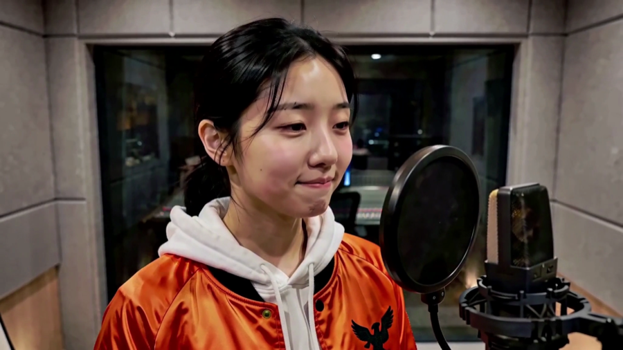
3/4
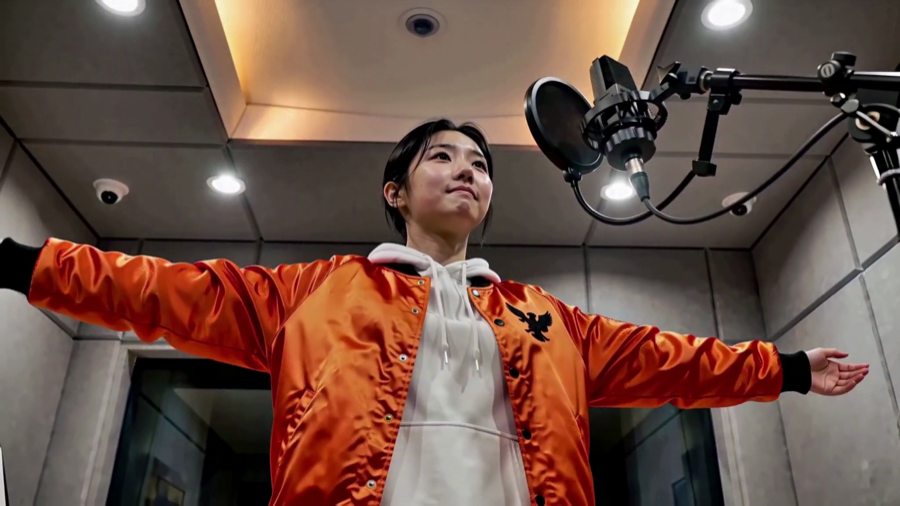
3/4
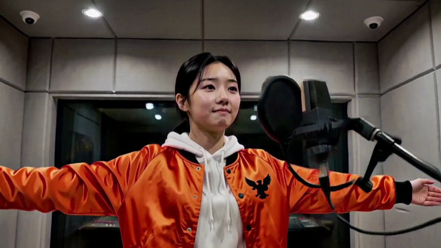
3/4

3/4
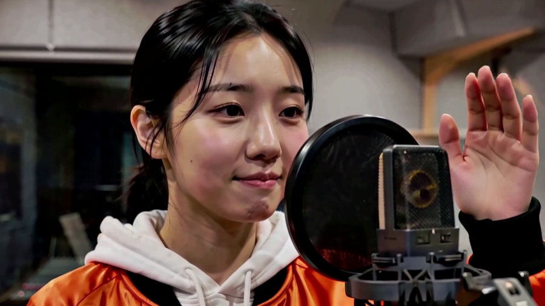
3/4
T11 한화 · 남자
243프레임에서 골랐습니다 · 못 고른 16장은 제외
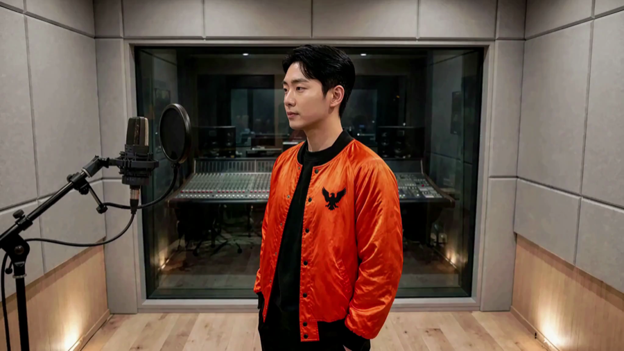
측면
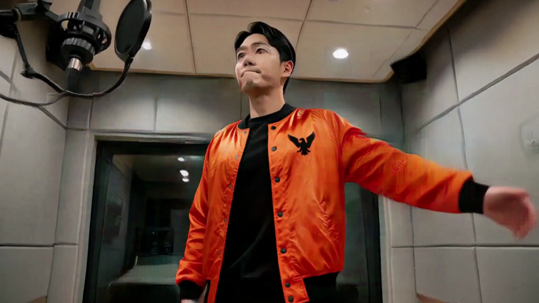
3/4
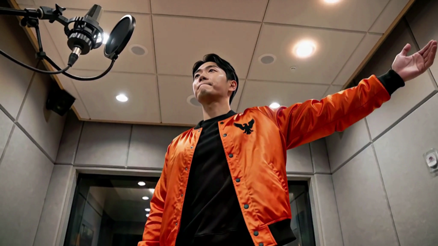
3/4
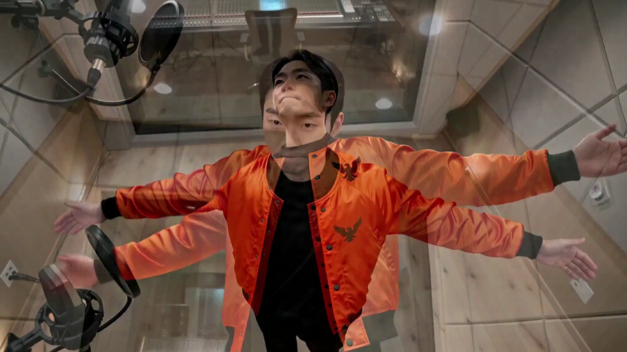
정면
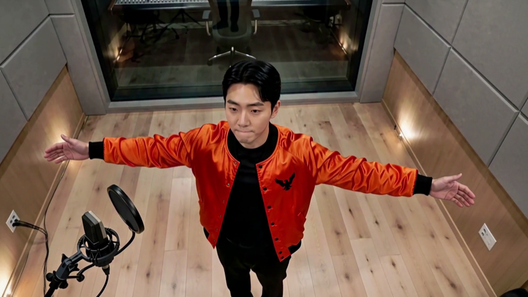
정면
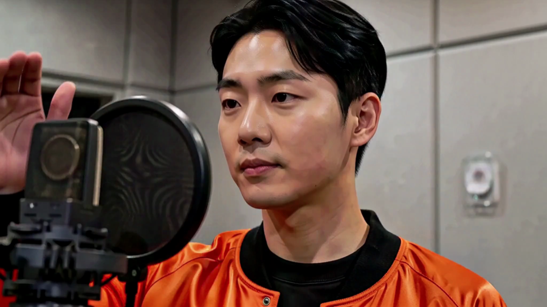
3/4
T15 · 남자
243프레임에서 골랐습니다 · 못 고른 73장은 제외
측면

3/4
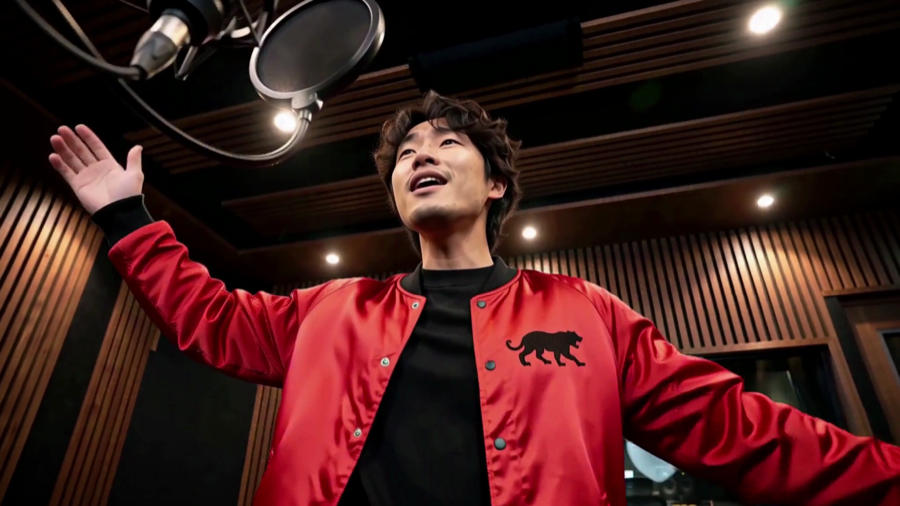
정면
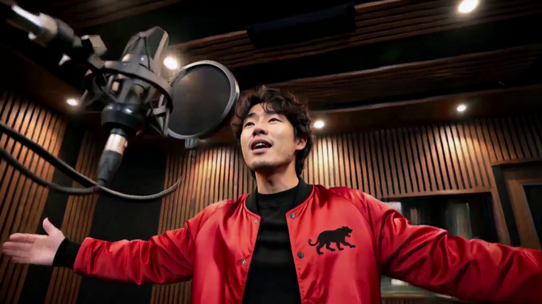
정면

정면
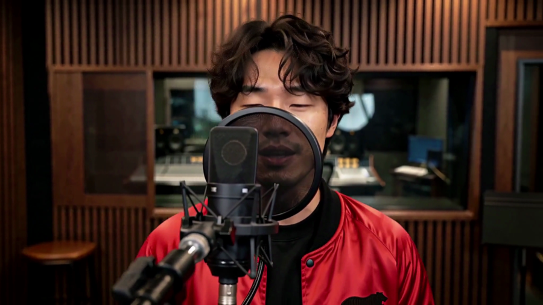
정면
⏳ T18 여자 판이 마지막으로 렌더 중입니다. 나오면 네 번째로 붙이겠습니다.
대표님께
판마다 쓸 번호만 주시면 됩니다 — 「T11 여자 1·3·5」 처럼요.
자가 답한 것은 「물리적으로 쓸 수 있다 · 서로 겹치지 않는다」까지입니다. 「이 얼굴로 3분을 보겠는가」는 대표님 눈이 정본입니다.